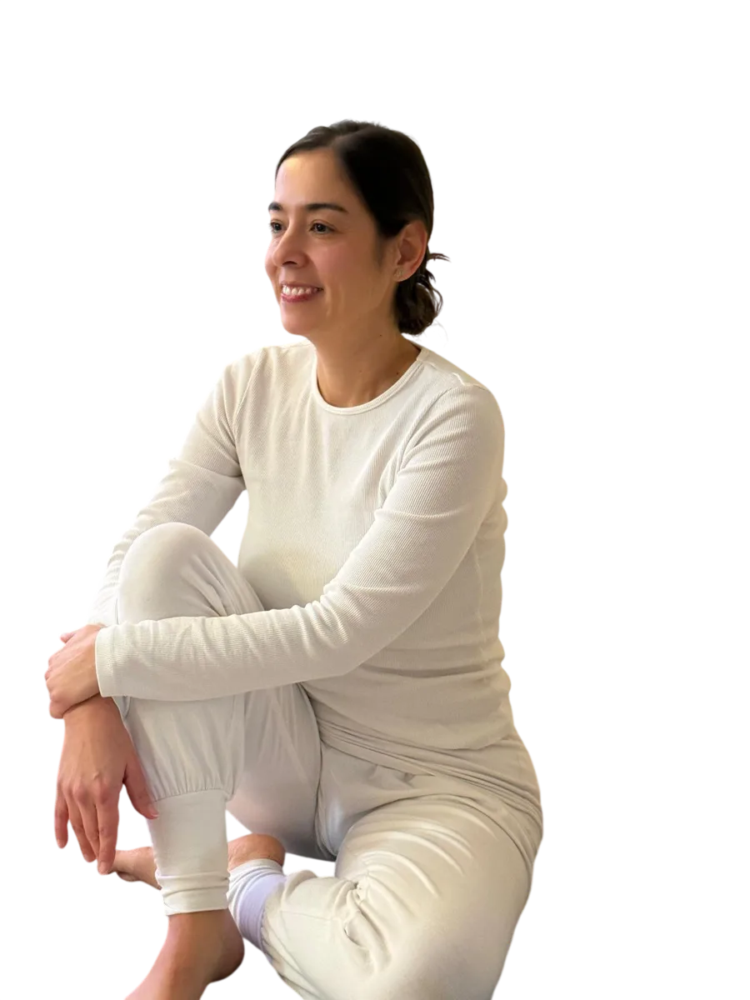

1
Hacia adentro
Escúchate
Nombras tu valor único con claridad, hasta poder explicar en una frase qué te hace única.
Para terapeutas, coaches y formadoras del bienestar que ya acompañan a clientas. Reúne tu experiencia en un programa propio —presencial, híbrido o digital— que genere más impacto y que puedas explicar con claridad.
Un método que une Design Thinking y autoconocimiento.
Empieza el 11 de enero de 2027 · Primero conversamos, sin compromiso.

Tu promesa, escuchada. 2 horas para tu promesa en una frase y el mapa de tu programa.
29 nov · 12 dic · 19 dic · Online, en directo por Zoom
Tienes años de práctica, herramientas, casos y aprendizajes. Lo que hoy está disperso puede convertirse en un recorrido, con inicio, proceso y resultado. No necesitas aprender más técnicas: necesitas escuchar lo que ya sabes y ordenarlo para que otras personas puedan seguirlo.
No necesitas saber más. Necesitas escuchar lo que ya sabes y darle forma.
Valor Único es un acompañamiento en grupo pequeño para profesionales del bienestar que ya trabajan con clientas. Reúnes tu experiencia, tus herramientas y lo que has visto funcionar en tus procesos, y lo ordenas en un programa propio que puedas explicar con claridad y ofrecer con confianza. Lo hacemos en tres tramos, con sesiones grupales, trabajo individual, lecciones y plantillas.
Escúchate
Nombras tu valor único con claridad, hasta poder explicar en una frase qué te hace única.
Escucha a quien sirves
Construyes una promesa contrastada con personas reales, tan clara que otra persona puede repetirla con sus propias palabras.
Dale forma
Diseñas tu programa piloto, con etapas, actividades y resultados.
Aquí no se mide cuánto tardas, sino lo que reconoces y lo que creas con ello. Cada etapa tiene un resultado claro. Si necesitas más tiempo para llegar a él, lo conversamos y lo resolvemos en el proceso.
Los grupos son pequeños, de 5 personas por mentoría. Si se forma un segundo grupo, se coordinará el día de las sesiones.
«Mis servicios, que antes eran piezas sueltas, ahora hacen parte de un programa claro y coherente, que sé explicar y que puedo ofrecer con confianza.»
No es un curso de redes sociales, de embudos ni de ventas rápidas. No prometemos fórmulas ni resultados garantizados. Es un trabajo de claridad y diseño. Y cuando tu servicio está claro, el marketing se vuelve mucho más sencillo.
Tampoco es un espacio para empezar a ofrecer servicios desde cero: está pensado para quien ya acompaña a personas. No es pedirle a una IA que diseñe tu programa.
Usamos IA como herramienta para acelerar borradores: la ruta de tu programa, materiales y tu invitación. Lo que no se delega: escuchar a personas reales, el criterio de la mentora, el grupo y tu propia voz.
Un programa hecho solo con IA se parece a todos los demás; el tuyo parte de tu historia.
Dejé de estar abrumada y con falta de visión para empezar a tomar acción y reconocer las bases de mi propósito.
Experiencia personal de un acompañamiento individual. No constituye garantía de resultados ni corresponde al formato grupal.
Fue un acompañamiento gratamente revelador para mí, con un contraste desafiante. A través del cual confirmé que mi valor único siempre estuvo, está y estará en mi proceso de transformación personal; permitiéndome ganar confianza y claridad en mi propósito y misión de vida, además de una conexión genuina con mi público (comunidad) y un incremento significativo en mis ingresos.
Experiencia personal de un acompañamiento individual. No constituye garantía de resultados ni corresponde al formato grupal.
Esta es la primera vez que llevo Valor Único a un grupo. Antes lo acompañé con cuatro mujeres, siempre de forma individual, y tres de ellas crearon un servicio estructurado y alineado con su propósito. También lo apliqué en mí: reuní mis piezas y me sentí lista para compartirlo.
Lo dejé durante dos años porque todavía había ruido en mí. En ese tiempo, la escucha profunda volvió una y otra vez: se hizo podcast, se hizo historia en El despertar de Ananda.
Volví cuando entendí la pieza que me faltaba: escucharte de verdad también es aceptar lo que no te gusta. Lo que creas es la extensión de lo que eres.
Mi proyecto se creó desde cero gracias a la ayuda de Katerine. Profesionalmente es impecable, muy implicada en el proyecto, formal, muy buena motivadora, paciente y amorosa.
Hace fácil lo complejo, tiene una gran capacidad de conectar ideas, ordenarlas y darles forma.
El programa está muy bien estructurado y detallado, da mucho enfoque y claridad, es un viaje de autoconocimiento donde uno crece personal y profesionalmente con ella.
Su acompañamiento y energía han sido clave para crear mi programa, siempre me ha empujado a seguir hacia adelante y se lo agradezco enormemente. Ha hecho realidad un sueño.
Experiencia personal de un acompañamiento individual. No constituye garantía de resultados ni corresponde al formato grupal.
Por eso esta es la Edición fundadora: un grupo pequeño con quien afinar, de forma transparente, las fases de Conexión y Diseño que he reajustado.
El Kundalini Yoga me invitó a escucharme. El podcast le dio voz a mi voz. Ananda soltó el control. Y Valor Único le pone estructura: mi mente y mi corazón puestos al servicio.

Fui docente universitaria y formadora en empresas, donde acompañé a más de 600 personas a desarrollar habilidades blandas y de venta. Entre esa experiencia y mis propios emprendimientos entendí algo esencial: un proyecto necesita estructura, una promesa de valor clara y un análisis real de a quién sirve para que esa promesa sea viable.
Luego llegó el Kundalini Yoga, y con él el mundo del bienestar y del crecimiento personal. Ahí las piezas se completaron. Comprendí lo que significa de verdad crear y liderar un programa, y eso es la escucha profunda.
No es romántico, es estratégico. Durante años mis proyectos fueron la extensión de un ruido externo: una tendencia, un «esto es lo que se vende». Hoy sé que funciona al revés: escucharte, escuchar a quien sirves, y crear y liderar desde esa extensión natural de quien eres.
Escucha Profunda es la casa: El despertar de Ananda y el canal de YouTube para todas, talleres y programas para empresas, y Valor Único, la puerta para coaches, terapeutas y formadoras del bienestar.
Las próximas ediciones tendrán un precio mayor.
Quiero conversar sobre Valor Único Ya conversamos, quiero reservar mi plazaAntes de entrar tenemos una conversación breve para ver si Valor Único encaja con tu momento profesional.
Como referencia, el recorrido está pensado para unas 7 semanas, seguido de un tramo de acompañamiento para convocar a tu primer grupo (unas 5 semanas más, incluidas). Es orientativo: lo importante no es la rapidez, sino lo que logras en cada etapa.
Lo resolvemos en el proceso. Si necesitas más tiempo para terminar la estructura de tu programa, lo conversamos; para eso es el tramo de acompañamiento. Y si avanzas antes, seguimos con la siguiente etapa.
La IA nos ayuda con borradores de la ruta, los materiales y la invitación. No sustituye la escucha de personas reales, el criterio de la mentora, el grupo ni tu propia voz. Tu programa parte de tu historia, no de una respuesta genérica.
Cuando tu programa está diseñado, tienes un tramo de acompañamiento incluido para convocar a tu primer grupo, con una sala de mentorías semanal para este objetivo. La condición es haber asistido a las mentorías y hecho tu parte del trabajo.
No necesitas tenerlo cerrado, pero sí experiencia acompañando a clientas. Tu trabajo actual es la mejor materia prima para definirlo.
Sí. Decidimos el formato al diseñarlo, según tu método y tu estilo.
No. Un programa bien diseñado no sustituye tu acompañamiento personal: lo ordena. Decidimos juntas qué se trabaja en grupo, qué a tu ritmo y qué se reserva para el trato individual.
No. Tu programa puede convivir con ellos o transformarlos.
No. Trabajamos la claridad de tu propuesta y una invitación directa a tu primer grupo. Cuando eso está claro, comunicarlo es más sencillo.
El taller es un primer paso práctico para empezar a ordenar tu idea. Valor Único es el acompañamiento completo, como referencia de unas 7 semanas, para llegar a tener tu programa piloto y tu invitación.
Sí, si quieres afinar tu promesa, tu público o tu invitación.
Sí: terapia, coaching, yoga, enfoque corporal, espiritual u holístico.
Una sesión grupal de unas 2 horas + unas 3 horas de trabajo entre sesiones.
Son por Zoom y quedan grabadas, así que puedes verlas después. Aun así, te invito a asistir en directo: ahí resuelves tus dudas en tiempo real y te nutres de la experiencia de otras colegas.
Acceso a todo el material del programa, las sesiones grupales semanales, tu sesión individual de reconocimiento, las grabaciones y el acompañamiento posterior para convocar. Y lo más importante: co-crear en un grupo de mujeres que comparten un mismo propósito, poner su conocimiento, sus dones y su experiencia al servicio en un programa que sea una extensión natural de ellas.
Es la primera vez que llevo Valor Único a un grupo. Afinamos juntas las fases de Conexión y Diseño, y por eso el precio es de fundadora. Las próximas ediciones tendrán un precio mayor.
Reservas con 100 € hasta el 31 de diciembre de 2026 (o hasta completar plazas). El 4 de enero de 2027 confirmamos el grupo y completas los 350 € restantes entre el 5 y el 10 de enero de 2027, una vez confirmado. Se aplica el derecho legal de desistimiento de 14 días.
Para empezar necesito al menos 5 participantes. El 4 de enero de 2027 confirmamos si se alcanza el mínimo. Si no se alcanza, te devuelvo íntegramente tu reserva.
Podemos conversarlo si es tu caso.
Déjame tu pregunta, duda o cuello de botella antes de la sesión. Te respondo durante el encuentro y lo verás en la grabación. Aun así, suele ser más efectivo estar en directo, porque una duda normalmente necesita resolverse con preguntas más profundas.
Antes de entrar hay una conversación breve, sin compromiso, para ver si encaja contigo.
Valor Único está pensado para profesionales que ya acompañan a clientas. Si estás en tus primeros pasos, escríbeme y vemos qué te conviene ahora.
Para que cada participante tenga espacio real en cada sesión. Las plazas son limitadas y se necesita un mínimo de 5 participantes para iniciar la edición. Si se forma un segundo grupo, se coordinará el día de las sesiones.
Tienes el derecho legal de desistimiento de 14 días desde el momento de tu inscripción y pago, para que decidas con tranquilidad. Y lo que más me importa es que al terminar hayas creado tu programa. Por eso, si al cabo del recorrido orientativo de unas 7 semanas sientes que no fueron suficientes para cumplir tus objetivos, y has asistido a todas las sesiones y realizado todas las actividades, puedes seguir asistiendo a las sesiones grupales 5 semanas más, sin coste adicional.
Decisiones y proyectos que nacen del alma, no del ruido.
Conversemos